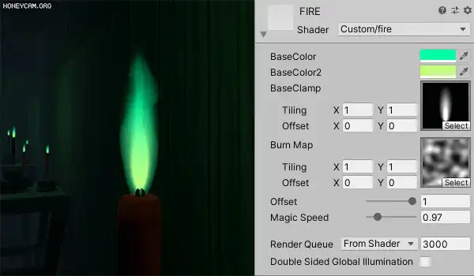
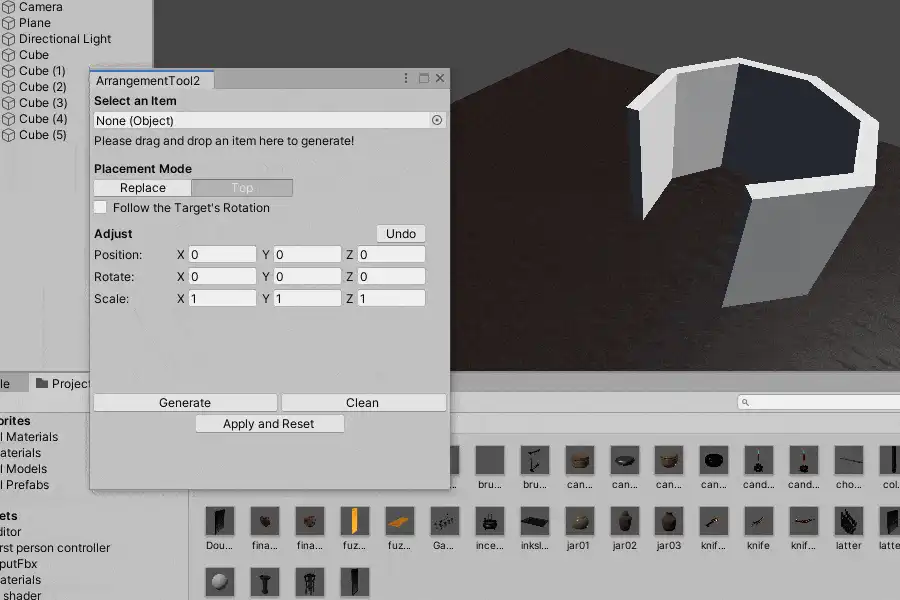

[2021] Horror Maze
by Kaimin Liu & Xueyan Zhang
Kaimin is programmer who works for the main game logic as well as some fight system, and I did the graphic part.
Shader Features - Unity Shader
Candle flame
At beginning, this flame was made with sequential frame textures, but I prefer to reduce work of texture painting, so I made a simple shader for the candle flame. These textures were made by Substance Designer.
Rune Burning
In this shader, it required a base coler map for the gameobject itself, and a noise map for burning which was made by Substance Designer too. There are 2 color for burning, we can adjust them to be more real or more magic. Change the value of Burn Amount can control the degree of combustion, this value can be changed by scripts.
Arrangement Tool
In the first version, Arrangement Tool was designed to quickly add items into the map which usually be those pickable items, such as knives or runes.

The second version of it has more use. For example, after we finished the game level design with white boxes in unity, we can select these boxes and replace them with 3d assets.